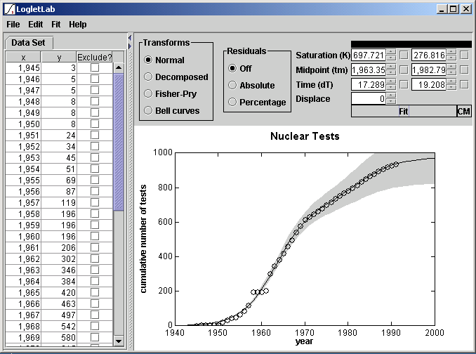

Loglet Lab 2 is a Java version of the original Loglet Lab software, rewritten from the ground up. Loglet Lab is also available at no cost under a BSD-like license, so it can be used on any platform that supports Java, including Windows, Mac OS X, and Linux.
The purpose of this document is to guide you through the installation and basic use of Loglet Lab. For more information on how to use logistic anlaysis, you should read through the Logistics Primer and original tutorial.
Contents
- License
- About Loglet Lab
- Differences from Loglet Lab 1.x
- Installation
- Your first loglet
- Features
- Further reading
License
Copyright (c) 2003, Program for the Human Environment, The Rockefeller University, except where noted. All rights reserved.
Redistribution and use in source and binary forms, with or without modification, are permitted provided that the following conditions are met:
- Redistributions of source code must retain the above copyright notice, this list of conditions and the following disclaimer.
- Redistributions in binary form must reproduce the above copyright notice, this list of conditions and the following disclaimer in the documentation and/or other materials provided with the distribution.
- Neither the name of The Program for the Human Environment nor The Rockefeller University nor the names of its contributors may be used to endorse or promote products derived from this software without specific prior written permission.
THIS SOFTWARE IS PROVIDED BY THE COPYRIGHT HOLDERS AND CONTRIBUTORS "AS IS" AND ANY EXPRESS OR IMPLIED WARRANTIES, INCLUDING, BUT NOT LIMITED TO, THE IMPLIED WARRANTIES OF MERCHANTABILITY AND FITNESS FOR A PARTICULAR PURPOSE ARE DISCLAIMED. IN NO EVENT SHALL THE REGENTS OR CONTRIBUTORS BE LIABLE FOR ANY DIRECT, INDIRECT, INCIDENTAL, SPECIAL, EXEMPLARY, OR CONSEQUENTIAL DAMAGES (INCLUDING, BUT NOT LIMITED TO, PROCUREMENT OF SUBSTITUTE GOODS OR SERVICES; LOSS OF USE, DATA, OR PROFITS; OR BUSINESS INTERRUPTION) HOWEVER CAUSED AND ON ANY THEORY OF LIABILITY, WHETHER IN CONTRACT, STRICT LIABILITY, OR TORT (INCLUDING NEGLIGENCE OR OTHERWISE) ARISING IN ANY WAY OUT OF THE USE OF THIS SOFTWARE, EVEN IF ADVISED OF THE POSSIBILITY OF SUCH DAMAGE.
About Loglet Lab
Differences from Loglet Lab 1.x
- Data entry interface. Entering data in Loglet Lab 1.x was not very intuitive. As part of the re-implementation, Loglet Lab 2.x uses standard user interface compenents which makes entering data much easier. Also, since many users already have their data in Microsoft Excel and text documents, Loglet Lab 2.x supports opening these files directly.
- Fitting interface. In Loglet Lab 1.x, fits were done
through a series of dialogs, which drew attention away from the
main interface. For Loglet Lab 2.x, we decided to take a more
direct approach by placing a fiting panel in the main window. The
fitting process itself has been streamlined, while at the same
time, the user has more control; you can change values and
instantly see the revised fit in the plot.
Also, in Loglet Lab 1.x, statistical bootstrapping was provided as a separate button in the interface. In Loglet Lab 2.x, this is automatically done on every computer-generated fit (i.e., when you click on the "Fit" button as opposed to using your own values). - Export to PNG. Many users wanted to add their graphs to web pages and PowerPoint presentations. Loglet Lab can now save their plots as Portable Network Graphics (PNG) images, which are supported in the current versions of common office applications (such as Microsoft Office) and web browsers (including Internet Explorer, Netscape, and Safari).
- Cross-platform availability. Loglet Lab 1.x was only available for Windows. However, we found that there were many users who used Mac or Unix (particularly in the scientific community). By re-implementing the application to Java, we can make Loglet Lab available for many platforms.
- Extensibility. As part of the re-implementation, we also redesigned the fitting process into modules. By implementing a few common interfaces, new fitting models can be more easily integrated into the code base. To this end, we plan to make the source code available under a BSD-like license, which will allow others to add their own ideas to the program. Because we have re-implemented in Java, development can also take place on any platform.
Installation
System Requirements
Again, because Loglet Lab is written entirely in Java, it can be used on any platform that supports Java. We have tested it on Windows 98, 2000, Mac OS X, and RedHat Linux.
To use Loglet Lab 2.x, you will need at least 32 MB RAM (128 recommended) and about 1 MB free space on your hard drive. In addition, you must have a Java Runtime Environment (JRE) v 1.4.1 or later. This will require another 50 MB free space on your hard drive.
Getting a JRE
- Windows or Linux users: Java 1.4.1 JRE can be downloaded
from Sun at http://java.sun.com/j2se/1.4.1/download.html.
Look under "Download J2SE", and click on
"DOWNLOAD" under "JRE", as highlighted in the
screenshot below. You do not need the full SDK.

- Mac OS X users: Java support is built into the OS; if you are running 10.2.x (Jaguar), you should run Software Update to upgrade to Java 1.4.1 if you haven't already.
Download and Install
Go to http://phe.rockefeller.edu/LogletLab/2.0/download.html to get the Loglet Lab package for your operating system. Windows and Mac users can get an installer which will automate most of the installation. Linux/Unix users can get a TAR file which contains all of the necessary files to run Loglet Lab 2 (excluding the JRE).
Windows
If you have a beta version of Loglet Lab 2 already installed on your machine, we recommend uninstalling it. Loglet Lab 2 will not affect Loglet Lab 1 (a.k.a. "Loglet Lab for Windows").
To install Loglet Lab 2, double-click on LL-<version-number>-install.exe. The installer will guide you through the installation process; most users should be able to use the default options. The installer creates an icon in your desktop and a group in your Programs menu, which includes a link to an uninstaller.
The Loglet Lab icon an a desktop.
Mac OS X
Double click on LogletLab-<version-number>.dmg. This will mount the LogletLab image (a disk icon) on your desktop. Double-click on that, and that will open a new Finder window with LogletLab.pkg.
The Loglet Lab disk image.
The Loglet Lab Installer for Mac OS X.
Linux/Unix
The Linux/Unix tarball will create a directory called "ll2/" and put all of the necessary files in there.
- Open up a terminal a terminal window.
- Make sure Java is available on your machine:
java -version - cd <directory where tarball was saved>
- Unzip the tarball:
tar xzf LogletLab2_<version-number>.tar.gz (gzip version)
tar xjf LogletLab2_<version-number>.tar.bz2 (bzip2 version)
Your first loglet
Starting the application
Windows
To run Loglet Lab, double-click on the "Loglet Lab 2" icon on your desktop, which you can also find in your Start Menu under "Start > Programs > Loglet Lab 2".
Mac OS X
Double-click on the LogletLab icon in the install directory to launch.
Linux/Unix
In the ll2 directory, type ./startLogletLab.sh to launch Loglet Lab.
New document/edit plot info
Loglet Lab opens the last document you last opened or saved by default. If this is your first time running Loglet Lab, the program will create a new document. At that time, it will also ask you for the title and axis labels. If you want to change these later, you can do so by going into the Edit menu and selecting Plot Info....
The New Document/Edit Plot Info dialog.
Open a document
Alternatively, if you already have data in a text file or Excel spreadsheet, you can open that file. (Find out how to format your documents below.) Go to the File menu and select Open... In the Open dialog, choose All importable files or All files, select the file (e.g."Sunflower.xls"), then click Open.
The Open dialog window.
To import correctly, the file must follow a strict format. Excel (XLS) files should have two columns per data set, and text files should have one (x,y) point per line, separated by commas or whitespace or both.
Enter data
Entering data in LL2 is straightforward: enter x and y values in the grid. When you enter an x or y value to the last row, a new row will automatically be added to the table. You can also paste data from a spreadsheet or text file (using the same format as per above).
If you want to exclude a data point (say, to mask an outlier), check the box in the Exclude? column. The corresponding point will be drawn in red.
Do a fit
Fitting models are objects in the new Loglet Lab, so one could conceivably add different models (for example, simple least-squares regression) to the program. Currently, the only fit models are the two from the original version, logistic curves and logistic substitution.
To add a logistic curve to the plot, select Fit Logistic or Fit Bilogistic from the Fit menu. A panel will be created above the graph, showing the parameters. Loglet Lab will try to make a first guess at parameters, but you will probably have to refine them, either by clicking on the Fit button and letting Loglet Lab run its fitting algorithm, or by entering new values or using the spinners (the arrows on the right of the text field). Note that Loglet Lab's fitting algorithm is iterative; you may have to click on the Fit button a few times before it converges on its best value.
Sunflower data, with the first guess from Loglet Lab. To get a better fit, click on the Fit button.
Nuclear testing data with the final parameters.
Save your work
To save your work, go to the File menu and select Save. This will open a standard file dialog in which you specify the name of your file. Loglet Lab 2 saves it as an XML document, and will append an ".xml" extension if none is entered in the Save dialog.
Upload your work to the Loglet Lab gallery
If you have an interesting logistic data set, we'd love to see it. You can upload your Loglet Lab 2 files to our web site (<http://phe.rockefeller.edu/LogletLabWeb/>) and share it with the community.
Features
Logistic curve fitting
Bootstrapping
After a fit, Loglet Lab will show a gray region which reflects the statistical confidence of the estimated parameters. See the Primer for a more detailed explanation of bootstrapping. This was a suppplemental feature in Loglet Lab 1.x, but in the current version it is now done automatically.
Transforms
When you have a logistic curve on the plot, you can transform the data to get alternate views of the model. Decomposed separates the logistic components and data and plots them separately. Fisher-Pry also decomposes the components and data, but it also normalizes the data to compare characteristics of growth. Bell curves shows the rate of change of each component.
Constrained parameters
To hold a parameter to a fixed value, check the box next to that parameter. When you click on the Fit button, the fitting alorithm will keep the value constant and fit the other parameters. Note that checking the box will not prevent you from changing the value manually, i.e., by entering a new value or clicking on its spinner.
CM method
The CM button uses a method developed by Cesare Marchetti. If a data set grows logistically, then if the Fisher-Pry transformation is applied (using a hypothetical saturation (K) value), the data should appear linear on a semi-log plot. This in mind, the Marchetti method attempts to fit a straight line to data transformed in this manner. The main benefit to this over the Levenberg-Marquardt method used in the regular fit is that the latter tends to overestimate the saturation level.
First, Loglet Lab selects several values for saturation (K). For each K value, Loglet Lab applies a Fisher-Pry transformation is applied to the data to linearize it (on a semi-log plot), then performs a least-squares regression to fit a line to the transformed data. Finally, Loglet Lab picks the "best" fit using by putting chi-squared for each fit into incomplete gamma function and taking the highest value.
The Marchetti method also weights the middle points in the linear regression using a Gaussian distribution function.
Multiple data sets
To another data set to the plot, go to the Edit menu and select Add Data Set.... Loglet Lab will ask you to name the new data set; you can change this name later via the Edit Plot Info dialog. Loglet Lab will create a second tab in the data pane on the left side of the window. To switch between data sets, click on the tabs above the table grid. That is, if you click on a tab, its data will be shown in the grid.
Logistic substitution
To do logistic substitution, you first must have more than one data set. Go to the Fit menu and select Logistic Substitution. This will add the Logistic Substitution panel above the plot, and transform the data into market shares. In the Logistic Substitution model, trend lines are fitted to either the ascending or descending set of data, so, in the panel, you need to specify start and stop times between which a line would be fitted. Always fit to an ascending part when one is available.
Recording media
Turning off autoscaling on the ranges
To set the scale of an axis manually, go to the Edit menu and select Plot Info.... In the section for the axis that you wish to change, check the box next to min and enter the minimum and maximum for the axis. To turn autoscaling on again, re-open the Edit Plot Info dialog and uncheck the box.
How to format text and Excel documents for Loglet Lab
Text documents
Plain text documents should contain one (x,y) point per row. The coordinates can be comma- or whitespace- (space or tab) delimted.
A sample text file would start out something like the following:
1801.000000 25.000000 1804.000000 27.000000 1807.000000 29.000000 1809.000000 30.000000 1816.000000 31.000000 1817.000000 32.000000 1818.000000 33.000000 1819.000000 37.000000
Excel documents
Excel documents should contain one data set per sheet. If you want a title for the chart, enter it as the sheet name (on the tabs at the bottom of the sheet) Labels for the x- and y-axes are optional; they must be in the first row. Rows without numerical data in the first two columns will be ignored.
Printing and Exporting
You can print a hard copy by going to the File menu and selecting Print. This opens the Print Setup dialog, then the Print dialog. (This is a workaround, because Windows does not keep the orientation selection from the Print dialog.)
To export the plot for using it on a web page or another program like PowerPoint, go to the File menu and select Export. Loglet Lab will open a standard file dialog where you can enter the name of the file. Currently, Loglet Lab can only export Portable Network Graphics (PNG) images, 800 x 600 pixels. PNG is supported in most programs and web browsers.
Further reading
You may want to consult our papers on logistic analysis.
Comments?
Please send feedback to <loglet@phe.rockefeller.edu>.
Excel and PowerPoint are trademarks of Microsoft.